library(tsibble)
library(tsibbledata)
library(tidyverse)
library(fable)
uk_economy <- global_economy |>
filter(Country == "United Kingdom")
uk_economy |>
autoplot(Population)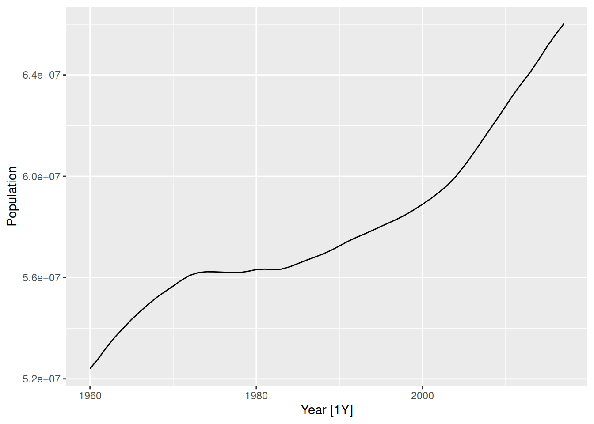
Check with your mentor on Slack
Forecasting involves modelling the historical patterns in the data and then projecting them into the future. Some models use time information alone, while others use additional information. Importantly, forecasting models assume the patterns in the past will continue into the future.
There are four basic forecasting models which are commonly used as ‘benchmarks’ for other more sophisticated methods. These are:
MEAN() - the average of the data (mean)NAIVE() - the most recent value (naive)SNAIVE() - the most recent value from the same season (seasonal naive)RW(y ~ drift()) - a straight between the first and last values (random walk with drift)Despite their simplicity, these models work well for many time series and can be difficult to improve upon!
Each of these methods work for a specific pattern that might exist in the data.
MEAN() - no patternNAIVE() - unit root processSNAIVE() - seasonalityRW(y ~ drift()) - simple trendThe models used for forecasting should match the patterns identified when plotting the time series.
Let’s look at the population of the United Kingdon
library(tsibble)
library(tsibbledata)
library(tidyverse)
library(fable)
uk_economy <- global_economy |>
filter(Country == "United Kingdom")
uk_economy |>
autoplot(Population)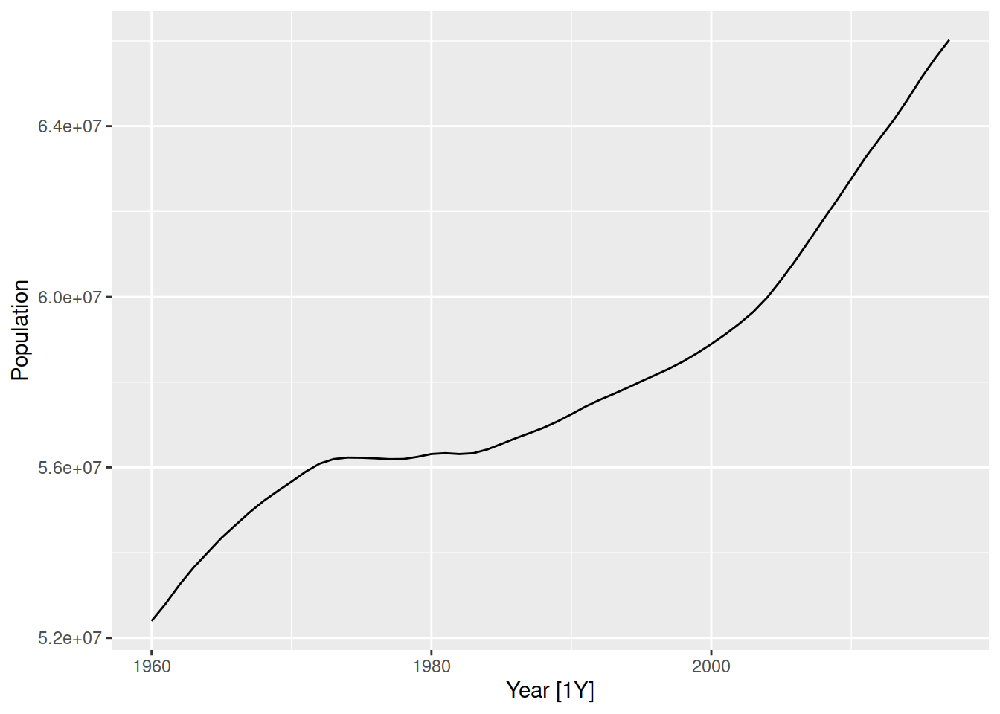
This time series shows an upward trend and no seasonality, so the random walk with drift is the most appropriate method from the four simple benchmark models above.
Similar to how we estimated an STL model, we use model() to train a model specification (RW(Population ~ drift())) to the data.
fit <- global_economy |>
filter(Country == "United Kingdom") |>
model(RW(Population ~ drift()))
fit# A mable: 1 x 2
# Key: Country [1]
Country `RW(Population ~ drift())`
<fct> <model>
1 United Kingdom <RW w/ drift>Models in {fable} are specified using a model formula (lhs ~ rhs).
On the left of ~ we specify the response variable (what we want to forecast) along with any transformations we’ve made to simplify the patterns.
On the right of ~ we specify the model specials, which describe the patterns in the data we will use when forecasting. This is model specific, so check the help file of the model with ?RW for more information!
To produce a forecast from this model we use the forecast() function, and specify how far ahead we wish to forecast with the h (horizon) argument. The h argument can be a number for how many steps to forecast, or plain text describing the duration.
fc <- fit |>
forecast(h = "10 years")
fc# A fable: 10 x 5 [1Y]
# Key: Country, .model [1]
Country .model Year Population .mean
<fct> <chr> <dbl> <dist> <dbl>
1 United Kingdom RW(Population ~ drift()) 2018 N(6.6e+07, 2.7e+10) 66261260.
2 United Kingdom RW(Population ~ drift()) 2019 N(6.7e+07, 5.5e+10) 66500247.
3 United Kingdom RW(Population ~ drift()) 2020 N(6.7e+07, 8.4e+10) 66739235.
4 United Kingdom RW(Population ~ drift()) 2021 N(6.7e+07, 1.1e+11) 66978222.
5 United Kingdom RW(Population ~ drift()) 2022 N(6.7e+07, 1.4e+11) 67217209.
6 United Kingdom RW(Population ~ drift()) 2023 N(6.7e+07, 1.8e+11) 67456196.
7 United Kingdom RW(Population ~ drift()) 2024 N(6.8e+07, 2.1e+11) 67695184.
8 United Kingdom RW(Population ~ drift()) 2025 N(6.8e+07, 2.4e+11) 67934171.
9 United Kingdom RW(Population ~ drift()) 2026 N(6.8e+07, 2.8e+11) 68173158.
10 United Kingdom RW(Population ~ drift()) 2027 N(6.8e+07, 3.1e+11) 68412145.Here we have a fable - a forecasting table. It looks like a tsibble, but the response variable Population contains entire distributions of possible future values at each step in the future. We can look at these forecasts using the autoplot() function.
fc |>
autoplot()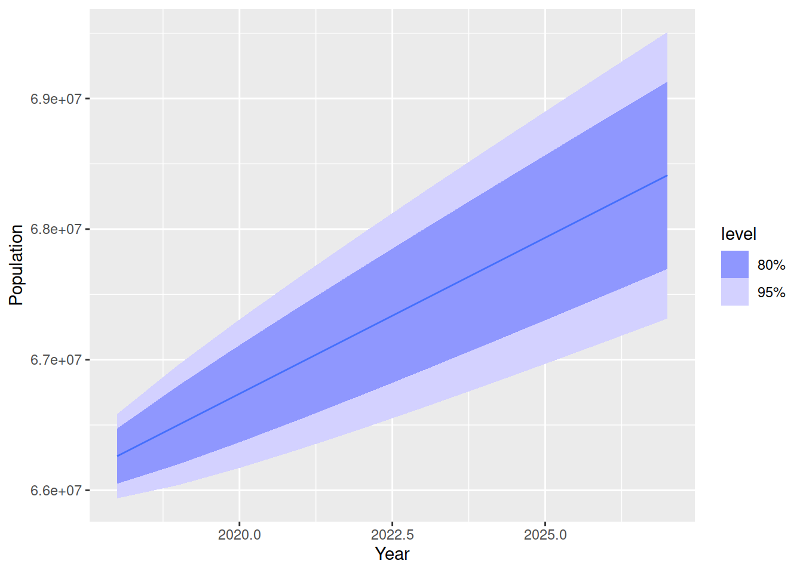
When plotting the forecasts it is useful to also show some historical data. This helps us see if the forecasts seem reasonable. To add historical data, add the original dataset to the first argument of the autoplot() function.
fc |>
autoplot(uk_economy)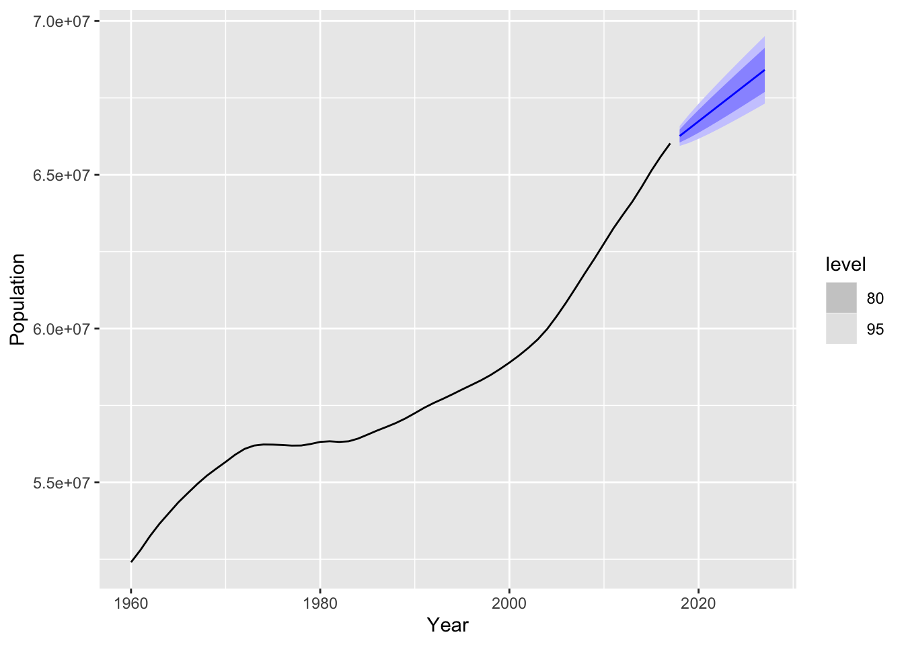
Not bad. These forecasts are trended upward but likely a bit flat. Verify that this forecast simply continues the line that connects the first and last observations. This trend is known as a global trend (or ‘drift’ for this model), but we can see the trend changes over time for this data. Later we’ll see more advanced models which can handle changing (local) trends.
Choose a country from the global_economy dataset and select the most suitable benchmark method. Produce forecasts of population for 15 years into the future, and comment on the suitability of these forecasts based on a plot of them and the data.
Next let’s forecast the household wealth of the four countries in the hh_budget dataset.
hh_budget |>
autoplot(Wealth)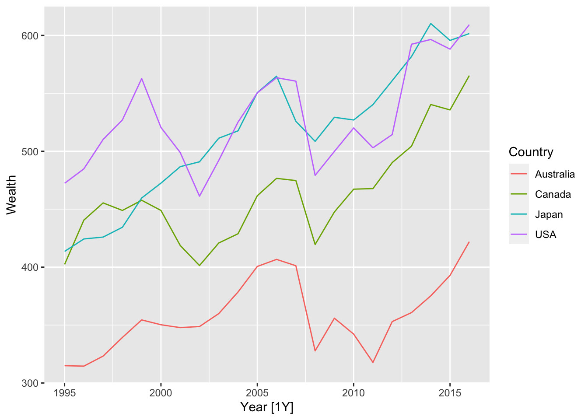
These time series all show some trend that changes over time. There isn’t any seasonality here, so the random walk with drift model would also work well here. The model() function will apply the specified model to all time series in the data, so the code looks very similar to above.
fit <- hh_budget |>
model(RW(Wealth ~ drift()))
fit# A mable: 4 x 2
# Key: Country [4]
Country `RW(Wealth ~ drift())`
<chr> <model>
1 Australia <RW w/ drift>
2 Canada <RW w/ drift>
3 Japan <RW w/ drift>
4 USA <RW w/ drift>Here we have four random walk with drift models that have been trained on the household wealth from each of the four countries in the dataset. We can forecast from all four models using the forecast() function, and then plot them with autoplot().
fit |>
forecast(h = "10 years") |>
autoplot(hh_budget)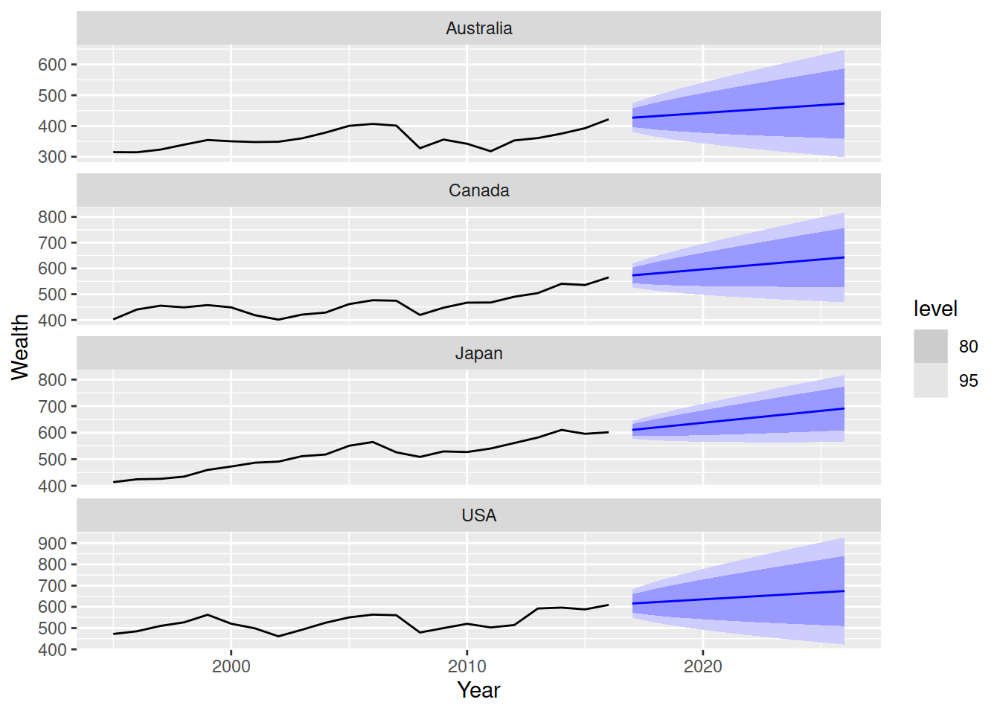
Comment on the suitability of these forecasts.
Let’s try to forecast the future turnover of Australia’s print media industry. Recall this plot from the previous exercises.
aus_print <- aus_retail |>
filter(Industry == "Newspaper and book retailing") |>
summarise(Turnover = sum(Turnover))
aus_print |>
autoplot(Turnover)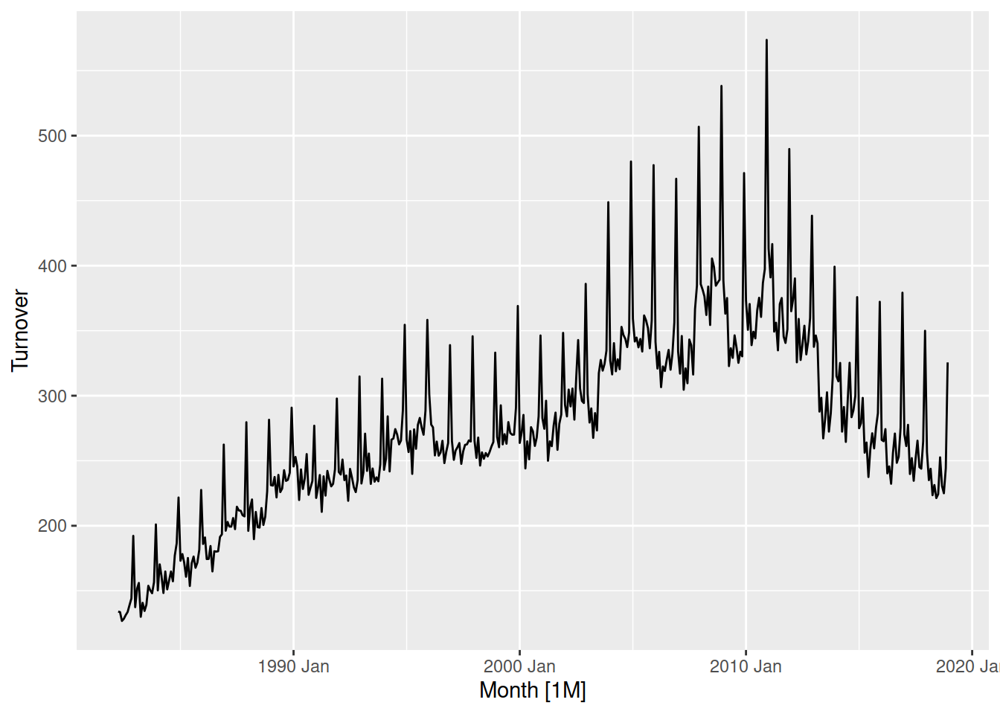
Which model would be most appropriate for this dataset? In this case none of the methods can capture all of the patterns here.
This dataset has a strong seasonal pattern, which a trend that changes over time.
The random walk with drift can handle trends, but in this case the changing trend does not match the global trend that this model will use.
The seasonal naive model can handle the seasonality, but it is unable to handle the trend too.
None of the four basic models can capture all of the patterns in this dataset, but the seasonal naive model is most appropriate since it can handle some of the patterns in the data.
fit <- aus_print |>
model(SNAIVE(Turnover))
fit |>
forecast(h = "5 years") |>
autoplot(aus_print)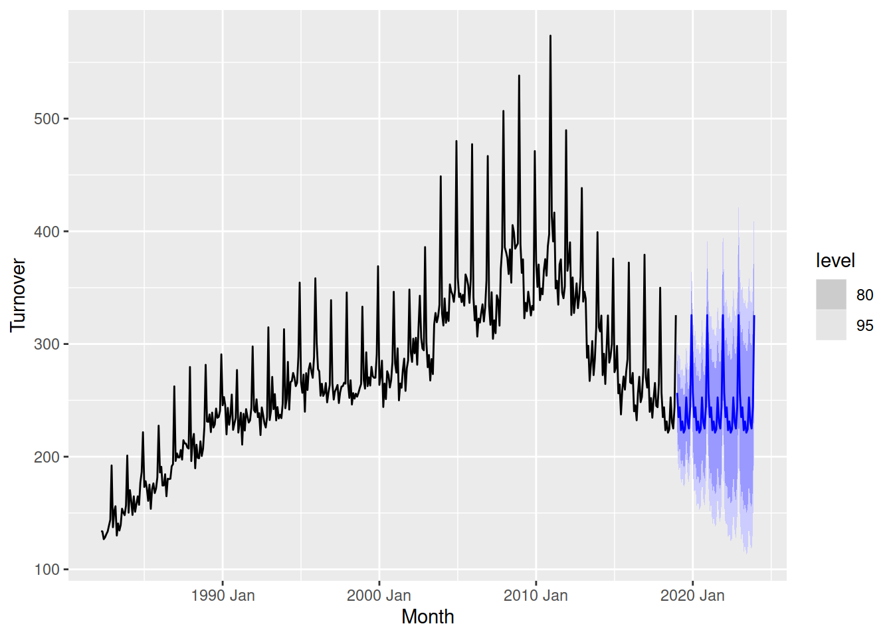
As expected, the forecasts have the same seasonal pattern as the recent data but don’t have any trend. We’ll need more advanced models to capture both.
We can compare the forecasts from multiple models by specifying several models in the model() function.
fit <- aus_print |>
model(
snaive = SNAIVE(Turnover),
rwdrift = RW(Turnover ~ drift())
)
fit# A mable: 1 x 2
snaive rwdrift
<model> <model>
1 <SNAIVE> <RW w/ drift>Here we have a column for each of the models that we have specified. Forecasts from both of these models can be created using forecast(), and compared visually with autoplot().
fit |>
forecast(h = "5 years") |>
autoplot(aus_print)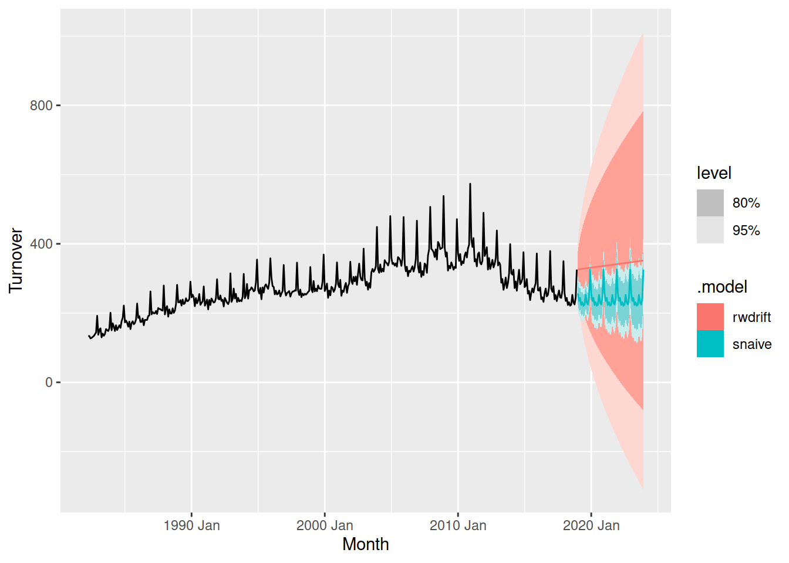
The seasonal naive method looks much better than the random walk with drift. The forecast intervals of the drift method are very wide, and the forecasts are trended slightly upward despite the recent turnover trending downward.
Produce forecasts from two suitable models for the total Australian retail turnover, and select the most appropriate one based on visual inspection of the forecast plot.
Linear regression can also be used to forecast time series, and by carefully constructing predictors we can use it to capture trends, seasonality, and relationships with other variables all at once.
A regression model is estimated using TSLM(), and there are some useful model specials which help create predictors for trend and seasonality.
A linear trend can be created with the trend() special. You can also specify changepoints in the trend by describing the ‘knot’ location(s) with trend(knots = yearmonth("2010 Jan")), which will create different trends before and after these knot(s).
Seasonal patterns can be modelled with the season() special, which will create dummy variables for each time point in the season. Don’t forget to transform your data first, since the season() special assumes all seasons have the same size and shape.
Let’s try to create a regression model for the Australian print media turnover. I’ve used a log() transformation to regularise the variance, but a box-cox transformation would work even better.
aus_print |>
model(
TSLM(log(Turnover) ~ trend() + season())
) |>
forecast(h = "5 years") |>
autoplot(aus_print)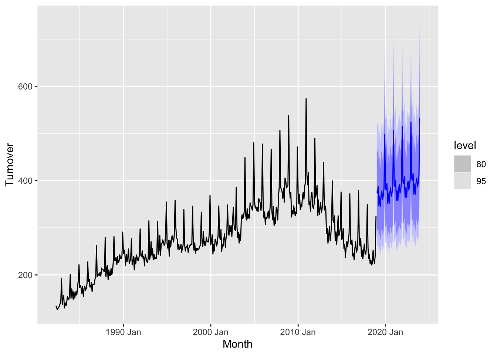
Those forecasts look bad! The seasonality matches the right shape, but the trend is completely wrong and the forecasts are very far from the most recent data. We need to improve our trend parameter with some knots.
aus_print |>
model(
TSLM(log(Turnover) ~ trend(knots = yearmonth("2011 Jan")) + season())
) |>
forecast(h = "5 years") |>
autoplot(aus_print)
Much better! Adding a knot just as the trend changes in 2011 allows the forecasts to follow the more recent trend.
Produce suitable forecasts from a regression model for the total Australian retail turnover that captures both the trend and seasonality in the data. Compare these forecasts with the two basic models produced earlier, which model produces the most reasonable forecasts and why?
The coefficients from this model can be obtained with the tidy() function, glance() provides a summary of the model and augment() returns a tsibble of the model’s predictions and errors on the training data. These functions are useful for better understanding the model that was used to produce the forecasts.
fit <- aus_print |>
model(
lm = TSLM(log(Turnover) ~ trend(knots = yearmonth("2011 Jan")) + season())
)
fit |>
tidy()# A tibble: 14 × 6
.model term estimate std.error statistic p.value
<chr> <chr> <dbl> <dbl> <dbl> <dbl>
1 lm "(Intercept)" 5.13 0.0154 334. 0
2 lm "trend(knots = yearmonth(\"201… 0.00248 0.0000396 62.6 3.45e-217
3 lm "trend(knots = yearmonth(\"201… -0.00843 0.000215 -39.3 7.68e-144
4 lm "season()year2" -0.00887 0.0189 -0.469 6.39e- 1
5 lm "season()year3" 0.0262 0.0189 1.39 1.66e- 1
6 lm "season()year4" -0.0830 0.0188 -4.42 1.24e- 5
7 lm "season()year5" -0.0278 0.0188 -1.48 1.40e- 1
8 lm "season()year6" -0.0864 0.0188 -4.60 5.52e- 6
9 lm "season()year7" -0.0220 0.0188 -1.17 2.42e- 1
10 lm "season()year8" 0.00197 0.0188 0.105 9.17e- 1
11 lm "season()year9" -0.0450 0.0188 -2.39 1.71e- 2
12 lm "season()year10" -0.0257 0.0188 -1.37 1.72e- 1
13 lm "season()year11" 0.0167 0.0188 0.888 3.75e- 1
14 lm "season()year12" 0.274 0.0188 14.6 1.75e- 39The initial trend is upward (+0.002477/month), but after 2011 the trend decreases (0.002477-0.008432=-0.005955/month). The seasonality peaks in December, which is +0.27426 more than January.
fit |>
glance()# A tibble: 1 × 15
.model r_squared adj_r_squared sigma2 statistic p_value df log_lik
<chr> <dbl> <dbl> <dbl> <dbl> <dbl> <int> <dbl>
1 lm 0.913 0.910 0.00643 345. 6.25e-217 14 494.
# ℹ 7 more variables: AIC <dbl>, AICc <dbl>, BIC <dbl>, CV <dbl>,
# deviance <dbl>, df.residual <int>, rank <int>The r-squared of this model is high, at 0.91.
fit |>
augment() |>
ggplot(aes(x = Month)) +
geom_line(aes(y = Turnover)) +
geom_line(aes(y = .fitted), colour = "steelblue", alpha = 0.8)
The model matches the historical data quite well, but the small changes in trend before 2010 can be improved upon.
Regression models can also use additional information from other variables in the data. Let’s consider the household budget again.
hh_budget# A tsibble: 88 x 8 [1Y]
# Key: Country [4]
Country Year Debt DI Expenditure Savings Wealth Unemployment
<chr> <dbl> <dbl> <dbl> <dbl> <dbl> <dbl> <dbl>
1 Australia 1995 95.7 3.72 3.40 5.24 315. 8.47
2 Australia 1996 99.5 3.98 2.97 6.47 315. 8.51
3 Australia 1997 108. 2.52 4.95 3.74 323. 8.36
4 Australia 1998 115. 4.02 5.73 1.29 339. 7.68
5 Australia 1999 121. 3.84 4.26 0.638 354. 6.87
6 Australia 2000 126. 3.77 3.18 1.99 350. 6.29
7 Australia 2001 132. 4.36 3.10 3.24 348. 6.74
8 Australia 2002 149. 0.0218 4.03 -1.15 349. 6.37
9 Australia 2003 159. 6.06 5.04 -0.413 360. 5.93
10 Australia 2004 170. 5.53 4.54 0.657 379. 5.40
# ℹ 78 more rowsHere we have lots of information about the households in these countries, including their debt, disposable income, savings, and more. We can use this information when modelling household wealth.
hh_budget |>
model(
TSLM(Wealth ~ trend() + Expenditure),
RW(Wealth ~ drift())
) |>
augment() |>
ggplot(aes(x = Year)) +
geom_line(aes(y = Wealth), data = hh_budget) +
geom_line(aes(y = .fitted, colour = .model)) +
facet_grid(vars(Country))Warning: Removed 1 row containing missing values (`geom_line()`).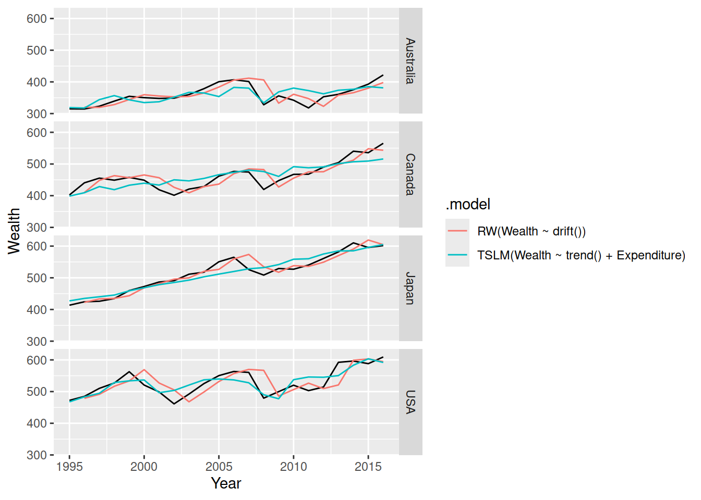
This seems to produce a better model than the random walk with drift, as it can better anticipate the drops in wealth before they happen. However there’s a catch, when we come to forecasting we need to know the future…
hh_budget |>
model(
TSLM(Wealth ~ trend() + Expenditure)
) |>
forecast(h = "5 years")Error in `mutate()`:
ℹ In argument: `TSLM(Wealth ~ trend() + Expenditure) = (function
(object, ...) ...`.
Caused by error in `value[[3L]]()`:
! object 'Expenditure' not found
Unable to compute required variables from provided `new_data`.
Does your model require extra variables to produce forecasts?
object 'Expenditure' not found, …, Does your model require extra variables to produce forecasts?
To produce forecasts from models that use extra information for transforming or modelling the data, you will need to provide the future values of these variables when forecasting! Often these are just as difficult to forecast as your response variable!
However if you cannot forecast these variables, the model can still be useful for scenario analysis.
The future values of extra variables used in the model must be provided to the forecast(new_data = ???) argument. The new_data argument is for a tsibble containing the future points in time, and values of other variables, needed to produce the forecasts. We can produce a tsibble with the future time points easily using the new_data() function.
new_data(hh_budget, 5)# A tsibble: 20 x 2 [1Y]
# Key: Country [4]
Country Year
<chr> <dbl>
1 Australia 2017
2 Australia 2018
3 Australia 2019
4 Australia 2020
5 Australia 2021
6 Canada 2017
7 Canada 2018
8 Canada 2019
9 Canada 2020
10 Canada 2021
11 Japan 2017
12 Japan 2018
13 Japan 2019
14 Japan 2020
15 Japan 2021
16 USA 2017
17 USA 2018
18 USA 2019
19 USA 2020
20 USA 2021Adding the future values for Expenditure is tricky though - we can forecast it or set up scenarios. For simplicity we’ll just see what happens if the expenditure has a growth rate of 3% for all countries over the 5 years.
future_hh_budget <- new_data(hh_budget, 5) |>
mutate(Expenditure = 3)
future_hh_budget# A tsibble: 20 x 3 [1Y]
# Key: Country [4]
Country Year Expenditure
<chr> <dbl> <dbl>
1 Australia 2017 3
2 Australia 2018 3
3 Australia 2019 3
4 Australia 2020 3
5 Australia 2021 3
6 Canada 2017 3
7 Canada 2018 3
8 Canada 2019 3
9 Canada 2020 3
10 Canada 2021 3
11 Japan 2017 3
12 Japan 2018 3
13 Japan 2019 3
14 Japan 2020 3
15 Japan 2021 3
16 USA 2017 3
17 USA 2018 3
18 USA 2019 3
19 USA 2020 3
20 USA 2021 3hh_budget |>
model(
TSLM(Wealth ~ trend() + Expenditure)
) |>
forecast(new_data = future_hh_budget) |>
autoplot(hh_budget)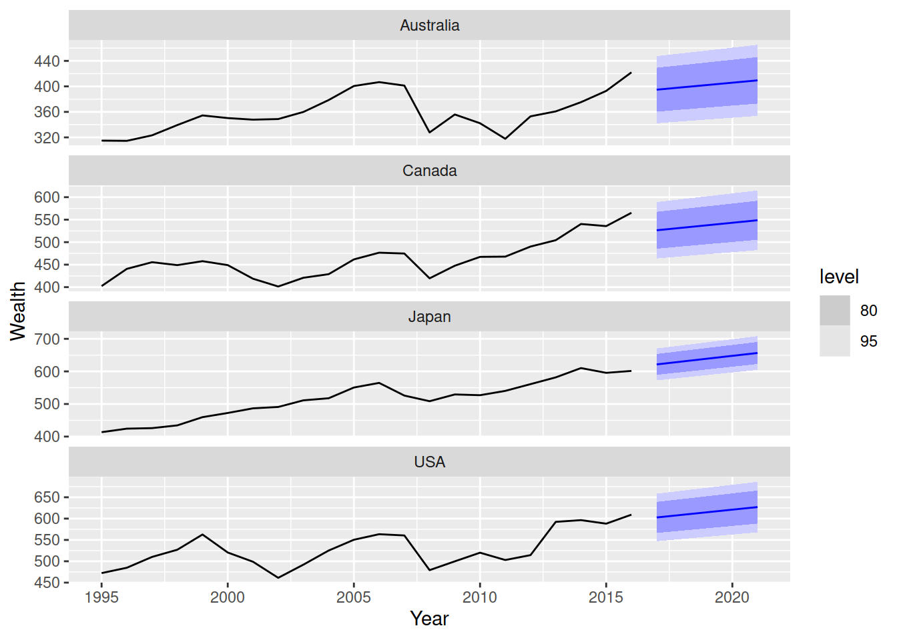
A better estimate of Expenditure will produce better forecasts.
In this exercise, we first use simple models to produce forecasts of future administered vaccine doses for the next 12 months. Following that, we use regression models to produce such a forecast.
Specify and train three simple models including total average, naive and seasonal naive on administered vaccine doses.
Examine the model table (mable) object and describe what each column and row represent.
Use report(), tidy(), glance() and augment() to explore the trained model’s output.
Produce forecasts for 12 months ahead including both point forecast and forecast distribution.
Examine the forecast table (fable) object and explain what each column and row represent.
Visualize the point forecasts alongside past values, as well as prediction interval for \(90%\) coverage.
Extract prediction intervals for \(90%\) coverage.
Produce probabilistic forecast using bootstrapping instead of assuming normal distribution. Generate 1000 possible future.
Examine the association between dose_adminstrated and predictors
dose_adminstrated and population_under1dose_adminstrated and strikepopulation_under1 and dose_adminstratedSpecify and train the four different regression models with the following terms:
Examine trained model output using report(), tidy(), and glance() and augment()
Produce forecast
new_data() to generate future months corresponding to forecast horizonVisualize forecasts